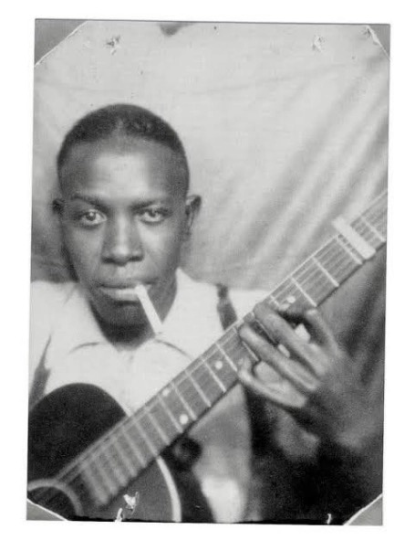

Hellhound on My Trail
I got to keep movin', I got to keep movin'
Blues fallin' down like hail, blues fallin' down like hail
Hmm-mmm, blues fallin' down like hail, blues fallin' down like hail
And the days keeps on worryin' me
There's a hellhound on my trail, hellhound on my trail
Hellhound on my trail
If today was Christmas Eve, if today was Christmas Eve
And tomorrow was Christmas Day
If today was Christmas Eve, and tomorrow was Christmas Day
Aw, wouldn't we have a time, baby?
All I would need my little sweet rider just
To pass the time away, huh-huh
To pass the time away
You sprinkled hot foot powder, mmm
Mmm, around my door, all around my door
You sprinkled hot foot powder
All around your daddy's door, hmm-hmm-hmm
It keep me with ramblin' mind, rider
Every old place I go, every old place I go
I can tell the wind is risin', the leaves tremblin' on the tree
Tremblin' on the tree
I can tell the wind is risin', leaves tremblin' on the tree
Hmm-hmm, hmm-mmm
All I need's my little sweet woman
And to keep my company, hey, hey, hey
My company
Biography
Robert Johnson (1911–1938)
Early Life
Robert Leroy Johnson was born on May 8, 1911, in Hazlehurst, Mississippi, and grew up around Memphis and the Mississippi Delta. He took up the guitar as a young man and traveled the Delta playing juke joints, parties and street corners.
The Recordings
In 1936 and 1937 he made his only recordings, in two sessions in San Antonio and Dallas. They produced 29 songs, including “Cross Road Blues” and “Hellhound on My Trail.” He died on August 16, 1938, at age 27, near Greenwood, Mississippi. The cause of his death was never confirmed.
Legacy
During his lifetime he was little known outside the blues circuit. That changed in 1961, when a reissue of his recordings introduced him to a new audience. His playing and songwriting went on to influence Eric Clapton, the Rolling Stones and many others.
The Legend
The story that he sold his soul to the devil at a crossroads is a legend that grew up after his death. There is no record that he ever told it himself.
